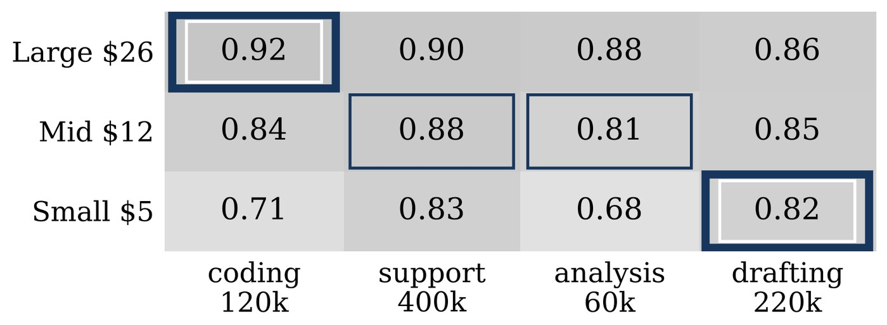

Which LLM for Which Work? Budgeted Model Allocation under Uncertain Evaluation
Can We Trust AI Evaluation? Workshop (TAE), NeurIPS 2026

The problem
An organisation has several models and several kinds of work, and a budget. Picking an assignment is easy once the quality table is known. The table is not known: it has to be estimated from evaluation data that is limited, and often logged rather than collected on purpose.
What we do
Decision-targeted evaluation: direct the testing budget at the comparisons that could actually change the assignment, rather than spreading it evenly over cells whose value is already settled.
What it buys you
The evaluation budget buys decisions rather than numbers — effort goes to the handful of pairs where more data would move the answer, and the pairs that cannot change it are left alone.
Cite
@inproceedings{khosravi2026which,
title = {Which {LLM} for Which Work? Budgeted Model Allocation under Uncertain Evaluation},
author = {Khosravi, Hamed and Huo, Xiaoming},
booktitle = {NeurIPS Workshop on Can We Trust AI Evaluation? (TAE)},
year = {2026}
}